december, 2004
How to (not) blink a LED in JAL
Even a simply program, like how to blink a single LED with JAL, can give a lot of trouble to newbies. To show some basic fundamentals we'll start with a syntactical correct program of 7 lines, that also contains about 7 practical errors/problems. This page is not written to discourage you to use JAL, but just to help you to discover the wrong first steps you could make. JAL is a beautiful language, and if you understand everthing on this page, you can create almost anything you want with JAL.
At the end is an "advanced section", discussing fast-io, io in combination with interrupts, mixed shadowed and direct IO.
If you fully understand what is written on this page (whether you agree or not with everything detail on this page), and you still need more functionality, you should read more about using interrupts (I think Vasile has something on interrupts on his site). And last but not least if you need more speed, you should learn assembler which can be fully embedded in JAL.
For these examples I downloaded the latest JAL version (4.60), including all the standard libraries. (After reading this page back I saw that my compiler was still set to 4.59, but that doesn't influence the results).
The goal is to blink a LED, that's connected with a series resistor between ground and an IO-pin of the 16F877 or 16F876.
Personally I never use these libraries and so here's my first advice from these examples "don't rely on these libraries and collect your own set of libraries".
Not blinking LED 1
The problem in the first program is very obvious, because it's indicated by the compiler.
The compiler cann't find the library file "16F876_20.jal", although the library path is correctly specified.
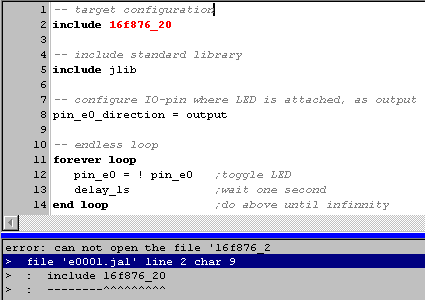
If we look into the a similar file, like "16F877_20.JAL" it's clear that these statements has nothing todo with a library file, but contains essential settings for an individual project, which the designer should be aware of. Don't bother about these statements for the moment, but don't forget to look into them in the near future.
For this moment we simply solve the problem by changing line 2 to "include 16F877_20".
Is this allowed ? The answer is "Yes, if and only if you're using the correct set of libraries".
The only thing the compiler is concerned with, is the size of codeROM and the size of the register-RAM (at least that yields for the "16F"-series). A very handy trick, you don't have to understand right now, but again you should remember for future use, is to tell the compiler you're dealing with a 16F628 instead of a 16F877, code will be reduced by at least a factor 2, and even more important speed will be increased with an equal amount.
Not blinking LED 2
In this example, the code compiles ok, but the LED will not blink.
If you are a beginner, you'll probably never find out by yourself, why this program isn't working, because this problem is caused by an error in JLIB.
Setting of the direction of the E-port, is implemented wrong in JLIB. So we can simply "solve" the problem by choosing another IO port.
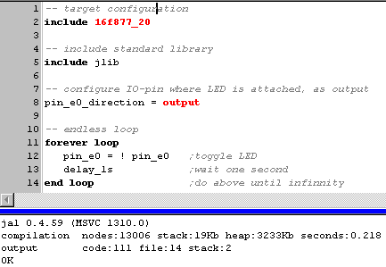
Not blinking LED 3
We changed the connection of the LED to IO-pin A4. To change the IO-pin, we had to change 2 lines: line 8 and line 12. This is a very fundamental problem !! On it's own it has nothing to do with the fact that the LED is blinking or not. But from my experience as a problem solver and designer, I can assure you that this phenomene, which is a form of REDUNDANCY, is THE MOST often seen cause of hard to detect problems in software. Unfortunatly JAL is not able to solve this problem, but using JALcc macros, you can solve the problem.
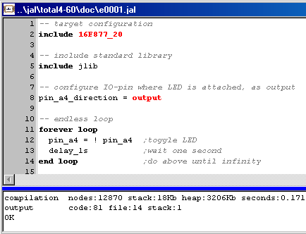
Not blinking LED 4
First we try to solve the redundancy problem as good as possible in JAL
In the image below, holding line 11 and 12 close together, doesn't solve the redundancy problem but at least makes it easier to detect problems concerning redundancy.
A good rule in software to remember "there should never be an explicit constant in your program, except in the definition part". "Pin_A4" is an explicit constant, "LED" is just a link to a constant. This rule not only prevents a number of potential errors but also makes the program better readable for yourself and for outsiders !!
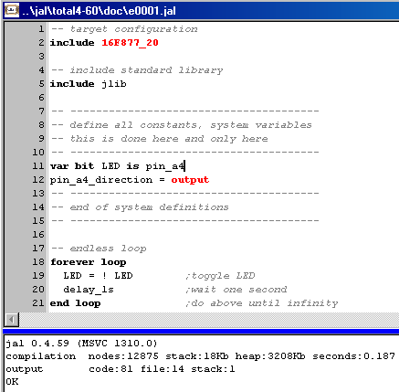
Not blinking LED 5
Now the next problem is that pin A4 on most 16F-series PIC is a special pin, with a open drain output, or in other words it can only draw current to ground (and not to Vcc). So again we solve this by choosing another IO-pin, in this case RA2.
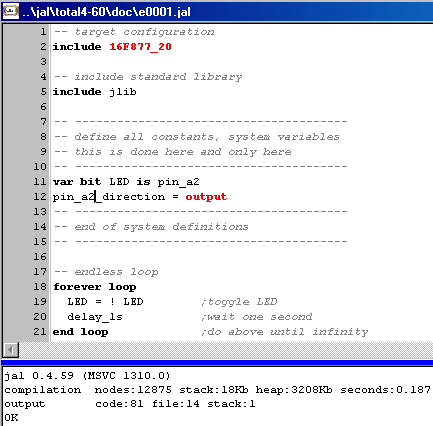
Blinking LED 1
Now another problem is that the A-port of a 16F877 is default set as an analog input port. That should sound familiar to you, if you've read the PIC manual carefully (which, I've to admit, is very borring).
Ofcourse you can discuss about the next point, but in my opinion at this moment (and sometimes I've a different opinion !!), a good library should initialize the A-port to normal digital IO operation. To solve this problem with the standard JAL-libraries, for the moment we add a call to "disable_a_d_functions", like is shown in line 9.
But this is a bad solution ! Why ? Because now the functional program code has become device dependant. If I want to use the code on a PIC without AD-converter, I've to remove line 9.
And now the LED should finally blink !!
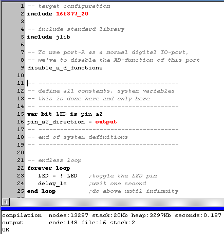
Blinking LED 2
There's one final misunderstanding that has to be discussed: the Read - Modify - Write problem.
When using only JAL (and no assembler), the Read - Modify - Write problem is no issue !!
Still want to know more, see the advanced section below.
So the next code is PERFECT !!
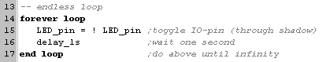
The next code is also OK, but it uses unnecessary code-space (and time) in lines 21 and 23.
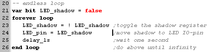
Blinking LED 3
And now the "perfect" (at least in my opinion, at this very moment) program to blink a LED. The picture is taken from JALcc V1.0, which is expected to be released in januari 2005. The previous versions of JALcc also support the here used JALcc macros. (btw. the uggly colors used here are only used during the development)
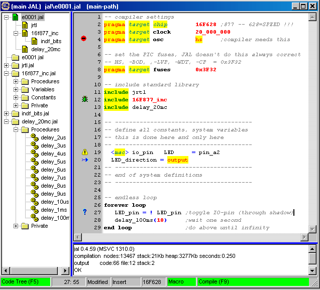
The main characteristics of this program are
Now let's take a closer look at some details of the program
Advanced Section
In this section, some JAL internals will be discussed, using IO outputs in combination with interrupts and mixed shadowed and unbuffered output control.
Read-Modify-Write problem
The read-modify-write problem (RMW) only occures when you write to single IO-pins. This problem is caused by the mechanism used for setting or clearing a single bit.
When setting or clearing a bit in a register (IO-port is also just a register), the register is completly read, the bit is modified and the value is written back into the register.
Now suppose you have just changed all bits of portA from low to high.
Shortly after this statement, you want bit2 of portA to go low again.
Now suppose bit0 of portA is heavily loaded (with a large capacitor, long lines, ...), so it will not have reached a high state.
What happens:
- port is read as 0b_1111_1110
- clear bit 2 will lead to 0b_1111_1010
- port is set back to 0b_1111_1010
So by clearing bit 2 you've an unwanted effect on bit 0 too !!
The solution to this is shadowing: manipulate the single bit in a normal register and as a last IO-action copy the shadow register to the real IO-port. All normal JAL libraries use this shadow technic.
Assembler port output
It's interesting to see what code is generated by the JAL-compiler, to see how we can optimize this code if we are short of speed and to see what problems might occure when using io-ports in interrupts.
Depending on the code memory size, the following code is generated for the statement "portA = 0x54"
asm1 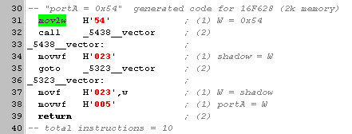 16F628 code
asm2 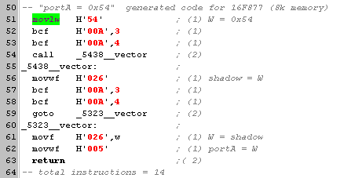 16F877 code
So for all 16F series a lot of speed can be gained by writing a few assembler instructions
(it's important to realize, that when you're writing at the JAL-level, bank0 is always the active bank. And so all JAL variables are in bank0 too.)
asm3 code for 16F628 and 16F877
Assembler pin-IO
asm 4 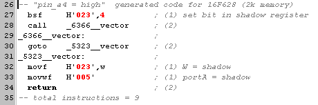 16F628 code
asm5 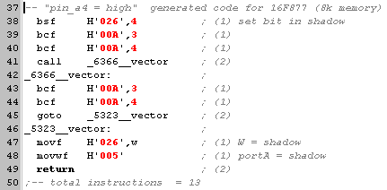 16F877 code
Now for all 16F devices speed can be gained thorugh embedded assembler,
just 1 instruction if no shadowing is needed and 3 instructions with full shadowing
asm6 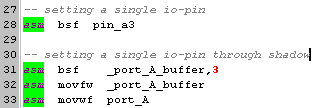 code for 16F628 and 16F877
IO-port writing and Interrupts
Using the same IO-ports/pins for writing, both in the normal code and in interrupts will cause problems.
Looking at the assembler code above, here are the critical points, where it goes wrong when an interrupt occures that manipulates the shadow register too
asm1: between line 31 and 34
asm2: between line 51 and 61
asm3: between line 20 and 24
asm4: between line 32 and 33
asm5: between line 47 and 48
asm6: between line 32 and 33
To solve this problem we should add disable interrupts before doing IO on such a port
The disadvantage of this method is that it adds 10 (16F628) upto 14 (16F877) instructions to a simple IO statement.
Another approach is to use direct IO (without shadow register), both in the normal program and in the interrupt. This method is very fast (no interrupt disabling necessary), has no problems with mixed normal/interrupt use, but may cause problems due to the read-modify-write issue.
Mixed shadowed and direct IO
You can use direct and shadowed IO both at the same time, as long as you ensure that after doing direct IO, the shadow buffer is updated.
Direct bit manipulation
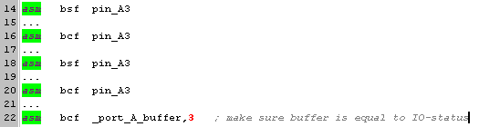
Direct port manipulation
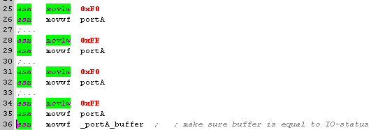
Fast IO-pulses
For fast bit manipulation, interrupts should always be disabled.
When there's no danger for the RMW problem, the following code will generate a positive puls of about 200 ns (@20 MHz)
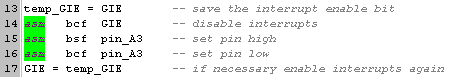
When RMW-issue might be a problem, the next code can be used, which will produce a positive puls of about 600 ns (@20 MHz). By using a double buffer, we can shorten the pulse to about 400 ns (@20 MHz).
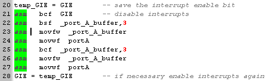